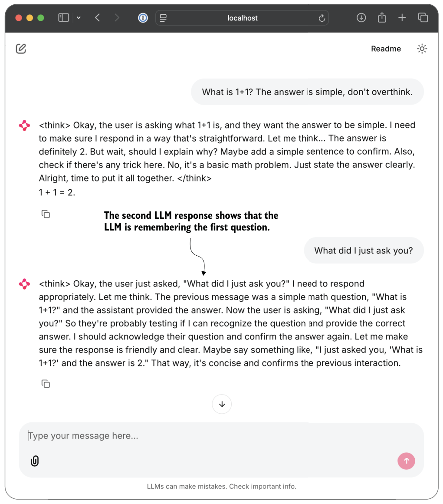

G.6The multi-turn interface
The second script, qwen3_chat_interface_multiturn.py, extends the basic Chainlit interface so that the model can condition on earlier turns in the same conversation. The following subsections explain what multi-turn means in practice, how the script implements it, and when it is appropriate to use.
G.6.1What multi-turn means
In a single-turn setup, the model only sees the current input. For illustration purposes, suppose the interaction looks like this:
User: What is 1 + 1?
Assistant: 2
User: What did I just ask?In the regular single-turn script, when the model receives the second message, "What
did I just ask?", it might respond with "I don't know what you are asking". The earlierquestion and answer are visible in the browser, but they are not included in the model input, so the model does not truly have conversational memory.
In a multi-turn setup (qwen3_chat_interface_multiturn.py), we explicitly include, or more specifically prepend, the earlier messages in the prompt, similar to what ChatGPT and other chat assistants do. In this case, the model might answer the ques
tion "What did I just ask?" with "You asked me what 1+1 is".G.6.2The multi-turn variant
The multi-turn script begins in the same way as the regular version, but it adds two helper functions and uses the stored session history during generation.
The first helper, in the following listing, turns the stored message history into the Qwen chat format we require.
def build_prompt_from_history(history, add_assistant_header=True):
parts = []
for m in history:
role = m["role"]
content = m["content"]
parts.append(f"<|im_start|>{role}\n{content}<|im_end|>\n")
if add_assistant_header:
parts.append("<|im_start|>assistant\n")
return "".join(parts)The build_prompt_from_history function in the preceding listing serializes the message list into the chat-template style that the Qwen reasoning model expects. Conceptually, the resulting prompt looks like this:
<|im_start|>system
You are a helpful assistant.<|im_end|>
<|im_start|>user
What is 1 + 1?<|im_end|>
<|im_start|>assistant
2<|im_end|>
<|im_start|>user
What did I just ask?<|im_end|>
<|im_start|>assistantThe model then continues generating from that final assistant header.
The second helper, shown next, trims the messages if they exceed the context length, since multi-turn conversations can grow very long.
def trim_input_tensor(input_ids_tensor, context_len, max_new_tokens):
assert max_new_tokens < context_len
keep_len = max(1, context_len - max_new_tokens)
if input_ids_tensor.shape[1] > keep_len:
input_ids_tensor = input_ids_tensor[:, -keep_len:]
return input_ids_tensorThis trim_input_tensor helper function ensures that enough room remains in the context window for the new tokens. If the conversation becomes too long, the oldest tokens are discarded first via left truncation. (Other, more sophisticated options also exist, such as summarizing the previous context, but that isn’t implemented here for the sake of simplicity.)
G.6.3How the multi-turn script uses history
The multi-turn behavior appears inside the message handler. At the beginning of each turn, the script retrieves the current session history and appends the new user message:
history = chainlit.user_session.get("history")
history.append({"role": "user", "content": message.content})It then builds the full prompt from that history, tokenizes it, optionally trims it, and streams the answer in the same way as before. At the end of generation, it stores the model reply back into the same history list:
history.append({"role": "assistant", "content": out_msg.content})
chainlit.user_session.set("history", history)This is the multi-turn script’s core difference from the single-turn script. The multi-turn version does not merely display a chat transcript in the browser; it feeds the earlier turns back into the model so future responses can condition on them.
The launch command is analogous to the single-turn case:
uv run chainlit run chG/01_main-chapter-code/qwen3_chat_interface_multiturn.pyOperationally, the script behaves just like the regular Chainlit interface, as shown in figure G.3. The only difference is in how the prompt is constructed internally.
The second response in figure G.3 indicates that the model remembers the first question through the provided context.
G.6.4Recommendations
The multi-turn Chainlit script is intended for the official Qwen3 reasoning variant. It is not a good fit for the chapter 8 distillation checkpoints, for example, because the distillation checkpoints were trained on prompt-response style supervision rather than on persistent multi-turn chat histories. They were not trained to continue a conversation over several turns in the same way as the official reasoning checkpoint.
As a consequence, the multi-turn script should not be expected to work reliably with the distillation checkpoints. I recommend you use them as follows:
- Use the single-turn Chainlit script for quick interactive tests, including custom checkpoints for chapters 6, 7, and 8.
- Use the multi-turn Chainlit script with the official reasoning checkpoint when you want conversation memory.

index
A
advantages, preparing learning signals from rollouts
via 201
advantage tracking 234
answer-only loss 289
autoregressive 4
reasoning 4
text generation 34
B
batched training 220
benchmark-based evaluation 59
BPE (byte pair encoding) 28
C
chatbot interfaces 35
checkpoints, saved model checkpoints, loading and
evaluating 220–223
clipped policy ratios
computing 243–247
stabilizing sequence-level GRPO using 242–248
training with 247
computation graph 207
conditional probabilities 151
conventional LLMs (large language models) 18
CoT (chain-of-thought) 3
prompting 100–103
D
datasets
generating for reasoning distillation 271
library 83
distillation 9, 267
hard and soft 268–271
knowledge 9
overview of 268–271
training loops for 291–296
loss 286
distilling reasoning models
evaluating distilled model 296–300
training examples 276–285
dtype 39
E
emergent properties 6
encode method 28
entropy tracking 236–240
evaluating reasoning models 84
building math verifiers 58
extracting final answer box 66–71
implementing wrapper for easier text
generation 65
loading pretrained model to generate text 61–64
evaluation, loading evaluation dataset 81–84
evaluation accuracy, calculating 232
extracted answers, normalizing 71–74
F
format reward, adding explicit 256–266
more modifications, tips, and tricks 264–266
training model to emit <think> tokens 261–264
using <think> tokens 257–261
full forward pass 14